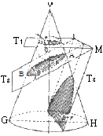
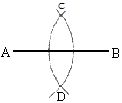
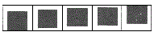
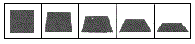
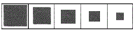
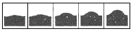
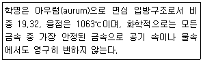

귀금속가공기능사 (2014-04-06 기출문제)
1과목: 공예디자인
1. 다음 중 투상의 법칙을 설명한 것으로 틀린 것은?
- 화살표의 방향에서 입체를 보고 있다고 생각 할 것
- 투상의 법칙을 염두에 두고 투상할 것
- 변형된 입체의 특징적 요소를 잘 나타내고 있는 면을 정면으로 잡을 것
- 입체투상은 4면체를 기준으로 하여 변형된 형태로 파악 할 것
(정답률: 60%)

2. 다음 중 유네스코가 지정한 우리나라의 세계문화 유산은?
- 호류사 5층 목탑
- 수원화성
- 화각 4층장
- 수월관음도
(정답률: 78%)
3. 오스트발트 색채론에서 등색상 삼각형의 수직축이 나타내는 것은?
- 등순색 계열
- 등흑색 계열
- 등가색환 계열
- 등백색 계열
(정답률: 56%)
4. 색체의 공감각 중 단맛을 느끼게 하는 배색은?
- 연녹색 또는 연 파란색과 회색의 배색
- 파란색, 밤색, 보라색의 배색
- 녹색과 노란색의 배색
- 적색, 주황색, 노란색의 배색
(정답률: 78%)
5. 원뿔 곡선을 절단하는 면의 위치와 방향 중 경사각이 수평일 때는?

- 원
- 포물선
- 타원
- 쌍곡선
(정답률: 82%)
6. 어떤 색이 서로 가까이 있는 주위의 색과 닮은 색으로 느껴지는 현상은?
- 색의 주목현상
- 색의 진출현상
- 색의 동화현상
- 색의 대비현상
(정답률: 87%)
7. 다음 그림은 평면도착에서 무엇을 하기 위한 것인가?

- 평행선 긋기
- 직선의 2등분하기
- 직선을 4등분하기
- 직선을 황금분할하기
(정답률: 80%)
8. 다음 중 도면에서 선의 굵기가 가장 굵은 선은?
- 외형선
- 파선
- 중심선
- 치수선
(정답률: 73%)
9. 먼셀의 채도 단계 범위를 옳게 표시한 것은?
- 1~10
- 1~12
- 0~14
- 0~24
(정답률: 53%)
10. 연속적인 억양상태를 가진 운동이라고 할 수 있는 조형원리는?
- 대비
- 대칭
- 균형
- 율동
(정답률: 74%)
11. 다음 그림 중 형태적 점이에 해당하는 것은?




(정답률: 57%)
12. 저명도의 한색계 색상 벽지를 사용할 경우 생기는 느낌은?
- 벽이 진출되어 보인다.
- 따뜻한 기분이 든다.
- 벽이 수축되어 보인다.
- 안정감이 없다.
(정답률: 70%)
13. 카메라와 눈의 구조를 비교한 것으로 틀린 것은?
- 렌즈-수정체
- 조리개-홍채
- 렌즈뚜껑-각막
- 필름의 면-유리체
(정답률: 61%)
14. 다음 중 디자인의 조형 원리를 설명한 것으로 틀린 것은?
- 유사 또는 유사적 조화는 동질의 부분이 조합될 때에 이루어진다.
- 균형에는 대칭과 비대칭, 비례, 주도와 종속 등이 있으며 이것으로 점증을 연출한다.
- 부분과 부분 또는 부분과 전체 사이에 안정된 관련성을 주면서도 공감을 일으키면 조화가 성립된다.
- 대상의 부분과 부분, 부분과 전체 사이에 질서를 주는 형식으로서의 출발점은 통일과 변화이다.
(정답률: 54%)
15. 다음 중 색광혼합에 해당하는 것은?
- 감산혼합
- 중간혼합
- 보색혼합
- 가산혼합
(정답률: 64%)
16. 다음 중 원호의 반지름 표시방법으로 틀린 것은?
- 180° 이하의 원호 크기는 지름 치수로 표시한다.
- 화살표와 치수 숫자를 기입할 여유가 없을 때는 보조선을 사용하여 기입한다.
- 중심을 표시할 필요가 있는 경우에는 흑점 또는 +자로 그 부위를 표시한다.
- 원호의 반지름을 표시하는 치수선에는 호의 안쪽에만 화살표를 붙이고 중심 쪽에는 붙이지 않는다.
(정답률: 58%)
17. 다음 중 시대적 특징의 설명이 틀린 것은?
- 고구려-소박ㆍ검소한 단순미
- 백제-우아하고 세련된 문화
- 고신라-토속적이고 고유의 풍토 양식을 성립
- 통일신라-귀족중심의 문화
(정답률: 70%)
18. 다음 중 가는 일점쇄선을 이용하는 것은?
- 해칭
- 파선
- 중심선
- 숨은선
(정답률: 54%)
19. 노랑과 시안의 색료를 혼합한 결과는?
- 초록
- 빨강
- 파랑
- 검정
(정답률: 77%)
20. 다음 중 선의 형성과 특징을 설명한 것으로 틀린 것은?
- 선은 하나의 점이 이동하면서 이루는 자취이다.
- 점이 일정한 방향으로 진행할 때 곡선이 생긴다.
- 선은 여러 가지 너비를 가지고 있다.
- 점의 운동에 의해서 여러 가지 성격의 선이 만들어진다.
(정답률: 70%)
2과목: 귀금속재료
21. 제도 용구 중 도형을 치수대로 도면 위에 옮기거나, 선을 등분하거나 분할하는데 사용하는 것은?
- 디바이더
- 빔컴퍼스
- 스프링컴퍼스
- 비례컴퍼스
(정답률: 68%)
22. 자유곡선에 대한 느낌으로 옳은 것은?
- 평화와 정지
- 고결과 희망
- 명확성과 확실함
- 분방함과 풍부한 감정
(정답률: 84%)
23. 은백색의 티타늄(titanium) 금속 설명으로 틀린 것은?
- 무겁고 강도가 크다.
- 열과 부식에 강하다.
- 산화피막이 티탄 표면에 형성된다.
- 내식성이 매우 뛰어나 산(酸)이나 바닷물 등에 견딘다.
(정답률: 64%)
24. 다이아몬드의 가격을 평가하는 요소로 맞지 않는 것은?
- 컬러
- 경도
- 커트
- 클래리티
(정답률: 79%)
25. 다음 중 합금된 금속에 대한 공통된 성질은?
- 강도와 경도를 감소시킨다.
- 주조성, 내열 및 내산성이 나빠진다.
- 단일 금속보다 저하된 성질이 나타난다.
- 용융점이 낮아지고, 전기 저항이 증가한다.
(정답률: 75%)
26. 칠보에서 용융원소로 광택을 내주며 소지금속의 밀착성을 돕는 것은?
- 석고
- 장석
- 초석
- 연단
(정답률: 61%)
27. 아말감으로 회수되는 금의 채취율은 40~70% 정도로 낮다. 이러한 손실의 중요한 원인이 아닌 것은?
- 아연 분말에 의한 치환법으로 줄어든다.
- 산화철이나 백석으로 피복되어 있는 금은 수은과 작용하지 않는다.
- 흘러나가는 수은은 그 중에서 용해되어 있는 금과 같이 유출한다.
- 미세하게 분쇄되어 부유하는 금은 광택과 같이 유출된다.
(정답률: 44%)
28. 배럴 연마(barrel tumbling) 작업 시 작업물과 연마 매체를 넣고 작업할 때 연마 매체의 역할이 아닌 것은?
- 녹 제거
- 연마작용
- 윤활작용
- 광내기
(정답률: 65%)
29. 다음의 내용을 설명한 금속은?

- 백금
- 은
- 금
- 다이아몬드
(정답률: 80%)
30. 비중 7.1, 용융점 420℃이며, 알루미늄, 구리 다음으로 많이 생산되는 비철금속으로 값이 저렴하며, 철강 재료의 망식 피복용으로 가장 많이 사용되며, 조밀육방격자의 청색을 띤 백색 금속은?
- 니켈
- 마그네슘
- 텅스텐
- 아연
(정답률: 59%)
31. 구리가 다른 금속과 비교하여 우수한 점이 아닌 것은?
- 아름다운 색을 가진다.
- 전기 및 열의 양도체이다.
- 전연성이 좋아 단단하고 가공하기 쉽다.
- 아연, 주석, 니켈 등과 합금을 하면 귀금속적 성질을 갖는다.
(정답률: 53%)
32. 다음 중 귀금속 선재를 뽑을 때 많이 사용하는 윤활제는?
- 모빌유
- 붕사
- 유약
- 왁스
(정답률: 76%)
33. 다음 중 커런덤의 변종으로 가장 가치 있는 보석은?
- 루비
- 토파즈
- 수정
- 에메랄드
(정답률: 69%)
34. 우애, 진실, 충성, 불변, 신념 등을 상징하는 1월의 탄성색은?
- 토파즈
- 진주
- 자수정
- 가닛
(정답률: 76%)
35. 백금족에 속하는 귀금속에 대한 설명으로 틀린 것은?
- 이리듐(lr)-은백색으로 2400℃의 고융점을 갖는다.
- 팔라듐(Pd)-가공하기 어려워 장신구용 제작과 도금용으로 쓰이지 않는다.
- 로듐(Rh)-가열하면 산화피막이 생겨서 변색하기 쉬우므로 보석가공에 부적합하다.
- 오스뮴(Os)-은백색으로 상온에서 염소와 비슷한 냄새를 낸다.
(정답률: 55%)
36. 금속을 용해할 때 용융점보다 용해 온도를 얼마나 높여서 가열하는 좋은가?
- 5~10%
- 10~15%
- 15~20%
- 20~25%
(정답률: 71%)
37. 금속의 방식제로 적당하지 않는 것은?
- 아스팔트
- 쉘락니스
- 알코올
- 래커
(정답률: 65%)
38. 광택 연마제인 적봉(루즈)의 주성분은?
- Fe2O3
- Cr2O3
- Na2B4O7
- Na2SO3
(정답률: 63%)
39. 다음 중 은땜의 용제(Flux)로 가장 좋은 것은?
- 소다
- 붕산
- 마그네슘
- 아연
(정답률: 82%)
40. 저먼 실버(German silver)에 대한 설명 중 틀린 것은?
- 양백(洋白)이라고도 한다.
- 니켈이 10% 이상의 것은 은색을 띠고 부식저항이 크다.
- 색깔과 성질이 은과 비슷하며 소량의 은(Ag)이 포함되어 있다.
- 구리 합금 중에서 색깔이 희기 때문에 황동이나 청동과 비교되는 용어로 백동이라고도 한다.
(정답률: 74%)
3과목: 귀금속가공
41. 다음 중 특수한 디자인으로 인하여 줄질이 어려운 부분의 금속 표면을 벗기는 방법은?
- 희석황산처리(sulfuric acid)
- 버핑(buffing)
- 보밍(bombing)
- 초음파 세척(ultrasonic clean)
(정답률: 60%)
42. 금긋기 작업 시 주의사항으로 틀린 것은?
- 곡선은 여러 번 나누어 긋는다.
- 금긋기 바늘은 기름숫돌에 간다.
- 금긋기 바늘의 끝이 작업물과 정확히 접촉되도록 강철자에서 약 15° 정도 기울인다.
- 작은 일감은 직접 표면에 긋는다.
(정답률: 73%)
43. 다음 중 버니어캘퍼스로 측정할 수 없는 부분은?
- 폭
- 직경
- 깊이
- 둘레
(정답률: 77%)
44. 금(Au)을 용해할 때 산소를 제거하는 재료(원소)가 아닌 것은?
- 은
- 붕사
- 인
- 목탄
(정답률: 58%)
45. 다음 중 상감의 종류가 아닌 것은?
- 선상감
- 절상감
- 포목상감
- 통상감
(정답률: 67%)
46. 감탕 작업 시 금속 표면에 감탕이 묻어있는 것을 제거하는 방법으로 가장 좋은 것은?
- 석유나 식용유를 사용하여 닦아 낸다.
- 신너나 식용유를 사용하여 닦아 낸다.
- 돋을새김 망치로 가볍게 친다.
- 작업한 금속판을 잡고 불대로 열을 준다.
(정답률: 57%)
47. 끝날 모양이 둥글어 금속판을 부분적으로 꺽고 밀어내며, 정 날의 무의에 따라 질감을 내는 역할을 하는 것은?
- 조각정
- 상감정
- 돋을정
- 양조정
(정답률: 55%)
48. 다음 중 귀금속 용해용에 사용되는 도구가 아닌 것은?
- 흑연봉
- 내화벽돌
- 골쇠
- 광쇠
(정답률: 78%)
49. 안전검검 중 일상점검에 관한 설명으로 옳은 것은?
- 작업을 시작하기 전과 작업 중 또는 작업을 끝낸 후의 점검
- 매주 1회 또는 매월 1회 등 주기적으로 정확히 하는 점검
- 기계를 새로 구입하였거나, 기계를 개조 변경하여 오랫동안 쓰지 않던 기계를 사용할 때 하는 점검
- 경영 책임자 이하 각급 관리 책임자, 제일선 책임자 등의 주관으로 실시되는 부정기적인 점검
(정답률: 82%)
50. 금의 정제법이 아닌 것은?
- 아말감법
- 회취법
- 염화법
- 시안화법
(정답률: 60%)
51. 다음 중 C-1000-CW 라고 표시된 사포의 연마제는?
- 시안화나트륨
- 인산
- 무수크롬산
- 탄화규소
(정답률: 67%)
52. 주조체에 기공이 생기는 원인으로 틀린 것은?
- 불완전한 물줄 부착 작업인 경우
- 도가니에 붕사가 얇게 입혀진 경우
- 금속이 용해 온도가 너무 높았을 경우
- 불완전한 소성인 경우
(정답률: 64%)
53. 주조에서 매몰재와 물의 원칙적인 혼합 비율은?
- 100:10
- 100:20
- 100:40
- 100:60
(정답률: 67%)
54. 다음 중 경흉식(목걸이)에 대한 설명으로 틀린 것은?
- 고구려의 것은 장엄하며 벽화 등에서 찾아볼 수 있다.
- 백제 목걸이는 마한 시대부터 주옥류가 있다.
- 신라의 금제경식은 속이 비어 있는 중공투작구체가 있다.
- 신라 상감 유리옥부 경식의 유리옥에는 인물상의 두상이 표현되어 있다.
(정답률: 57%)
55. 다음 중 불꽃의 형태에 관한 설명으로 옳은 것은?
- 토치 불꽃의 종류에는 4가지가 있다.
- 탄화불꽃은 산화작용이 일어난다.
- 탄화불꽃은 금속 표면에 침탄작용을 일으키기 쉽다.
- 중성불꽃은 용접부의 산화나 탄화에 해를 준다.
(정답률: 55%)
56. 열처리 중 풀림의 목적이 아닌 것은?
- 단조, 주조, 기계가공에서 생긴 내부응력 제거
- 열처리로 인하여 경화된 재료의 연화
- 가공 또는 공작에서 연화된 재료의 경화
- 기계적 성질을 개선
(정답률: 57%)
57. 가스기구의 안전사용 방법으로 틀린 것은?
- 배관의 이음새를 정기적으로 점검한다.
- 가스용기에 안전기를 부착한다.
- 산소 용기 보관시설은 항상 55℃ 이하가 되도록 한다.
- 가스 밸브에 이상이 생겼을 때는 즉시 구입처에 연락하여 수리한다.
(정답률: 78%)
58. 다음 중 드릴 날이 부러지는 원인이 아닌 것은?
- 작업물이 고정되지 않고 흔들리는 경우
- 드릴 작업 중 무리한 힘을 주어 드릴이 휠 경우
- 드릴 날이 작업물을 관통하면서 갑자기 회전이 증가할 경우
- 드릴의 길이가 구멍 깊이에 비하여 짧은 경우
(정답률: 79%)
59. 수나사를 내기 위하여 다이스작업을 할 때, 절삭 도중 나사가 뜯기는 경우가 생기는데 다음 중 그 원인이 아닌 것은?
- 다이스가 마모되어 절삭할 수 없을 때
- 작업물의 지름이 너무 작을 때
- 역회전 시키지 않고 무리하게 계속 절삭할 때
- 균일한 힘을 주지 않고 너무 강한 압력을 주었을 때
(정답률: 65%)
60. 다음 중 산소용기의 가스 누설 검사액으로 가장 좋은 것은?
- 수돗물
- 비눗물
- 알코올
- 콩기름
(정답률: 87%)
"투상의 법칙을 염두에 두고 투상할 것"은 맞는 설명입니다. 투상을 할 때는 투상의 법칙을 염두에 두어야 합니다. 이는 입체를 평면에 투영할 때, 크기와 각도가 유지되어야 한다는 법칙입니다.
"변형된 입체의 특징적 요소를 잘 나타내고 있는 면을 정면으로 잡을 것"은 맞는 설명입니다. 입체를 투상할 때는, 입체의 특징적인 요소를 잘 나타내는 면을 정면으로 잡아야 합니다. 이는 입체의 형태와 특징을 잘 파악할 수 있도록 도와줍니다.
"입체투상은 4면체를 기준으로 하여 변형된 형태로 파악 할 것"은 맞는 설명입니다. 4면체는 입체의 기본 형태 중 하나이며, 입체를 투상할 때 이를 기준으로 하여 변형된 형태로 파악하는 것이 일반적입니다. 이는 입체의 형태와 특징을 잘 파악할 수 있도록 도와줍니다.